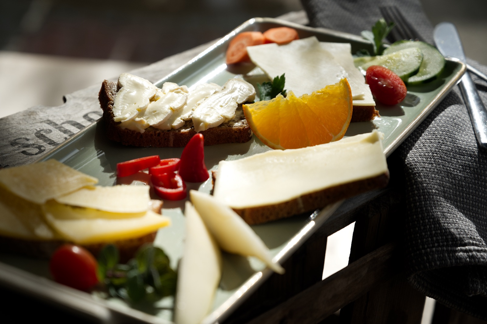

Mo–Sa bis 15 Uhr
Bio-Frühstück
Buntes, vegetarisches oder veganes Frühstück mit Brotkorb, Aufstrichen, Obst & Rohkost. Dazu Rührei, Spiegelei, Müsli, Croissant oder das Französische Frühstück.
6,50 – 16,00 €